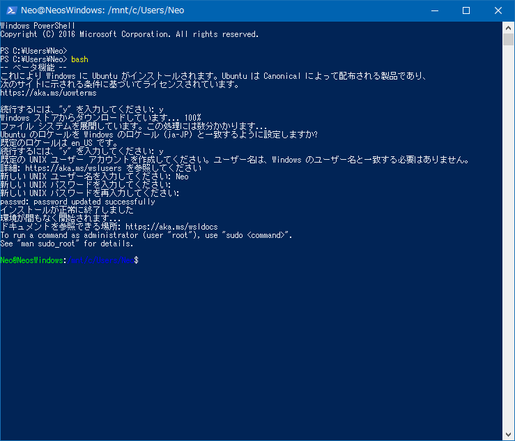

Bash on Ubuntu on Windows を導入するまでの道のり
Windows 10 Creators Update がリリースされた今日に合わせて、というつもりでは全くなかったのだが、Bash on Ubuntu on Windows をいじってみたくて、ようやく導入してみた、という流れ。実施環境は Windows10 64bit。
Windows Insider Program に参加しないと導入できないのかと思って、Windows Insider Program に登録したりしてしまったのだが、どうやら Windows10 Anniversary Update 以降は Windows Insider Program に登録しなくても Bash on Ubuntu on Windows をサクッと入れられるみたい。導入してから気付いた…。
Bash on Ubuntu on Windows って？
「Bash on Ubuntu on Windows」と呼んでいるのは、Windows10 上で Ubuntu をネイティブに動かせるようになった機能のこと。Windows 上に Ubuntu 環境が乗っかる形で利用できる。
Windows Insider Program について
Windows10 Anniversary Update というアップデート以前は、Bash on Ubuntu on Windows は開発者向けのベータ版として公開されていたため、Microsoft アカウントを登録し、Windows Insider Program というプログラムに参加する必要があった。
Windows Insider Program に参加する手順については以下の記事が詳しい。
が、Windows10 Anniversary Update の登場によって、もう不要になっていたようだ。
Windows Insider Preview も鬱陶しいので、もはや無効にしておきたい。
何やらブランチがあった
自分がコレを導入しようとした時は、何やらブランチ選択ができるようになっていて、「rs1_release」「rs2_release」など4項目ほどあったのだが、とりあえず古めで情報が出揃っていそうな「rs1_release」を選択しておいた。
Microsoft アカウントとローカルアカウント
Windows Insider Program に参加するために Microsoft アカウントに登録し、元々 PC にログインしているローカルアカウントを Microsoft アカウントに切り替える必要があった。これが鬱陶しかったのだが、後で以下の手順でローカルアカウントに戻せる。
- スタートメニューから PC 設定 → アカウント → 「ローカルアカウントでのサインインに切り替える」を選択し、ウィザードに沿ってローカルアカウントの再設定
ローカルアカウントの情報等は消えていないし、Microsoft アカウントとは情報を引き継げるので特に問題なし。
アップデートすると「7+ Taskbar Tweaker」が使えなくなった
「7+ Taskbar Tweaker」というアプリを使っていたのだが、Anniversary Update 以降はアプリ側の対応が十分ではないようで、起動時に「7+ Taskbar Tweaker: ライブラリをロードできませんでした (104)」というエラーが表示されてしまう。
公式サイトから Anniversary Update にも対応しているベータ版を落として入れてみたが、コチラもダメだった。残念。
Bash on Ubuntu on Windows の導入
さて、それでは Ubuntu の導入に移る。自分は Windows Insider Program から Update をかけたワケだが、今は違うっぽい。詳しく知らないので、とりあえず Windows Update などを行っておく。
Win + R で「ファイル名を指定して実行」を開き、winver と入力する。「Windows のバージョン情報」の中でビルド番号を確認する。
ビルドが
14316より大きければ Bash の機能が使える様になっています。
ということみたい。
以降は、以下のように操作していく。
- PC 設定 → 更新とセキュリティ → 開発者向け → 「開発者モード」を選択する。
- コントロールパネル → プログラムと機能 → Windows の機能の有効化または無効化 → 「Windows Subsystem for Linux (Beta)」という項目があるはずなのでこれにチェックを入れて、再起動する。
- 再起動後、PowerShell を起動し、
bashと入力する。Bash のインストールをするか聞かれるので、yと入力する。 - インストール中、言語切替やユーザ名・パスワードの設定を求められるので、入力していく。
- インストールが終わると、PowerShell 上で Bash が起動する。

これでインストール完了。以降はスタートメニューに「Bash on Ubuntu on Windows」というメニューが追加されているので、ココから起動できる。
Bash on Ubuntu on Windows に関する仕様
- ホームディレクトリは
C:\Users\(ユーザ名)\AppData\Local\lxss\home\(Bash 用のユーザ名)\になっている。隠しフォルダ扱いなので、隠しフォルダを表示するようにしておく。 - Windows 環境のドライブには
$ cd /mnt/c/といった形でアクセスできる。
その他は前述の参考記事が詳しい。基本的には普通に Linux として違和感なく触れる。
何も入力していない時にバックスペースを打ったりするとビープ音がしてうるさいのは、/etc/inputrc というファイルを書き換えると解消できる。
# 設定ファイルを Vi (Vim) で開く。編集するためには sudo で開く必要あり。
$ sudo vi /etc/inputrc
以下のようなコメントアウトされている行を見つける。
# set bell-style none
このコメントアウトを外し、:wq で保存終了する。
# こうする。
set bell-style none
これで Bash を再起動すれば、ビープ音が鳴らなくなっている。
所感
今まで自分が触ったことがある Linux ディストリビューションとしては、CentOS (Vagrant にて)、Red Hat Enterprise Linux (サーバとして)、Fedora (VirtualBox にて)、Xubuntu (ChromeBook の Crouton にて) ぐらいで、Ubuntu 自体は初めて触った。
- Windows 上から VirtualBox でLinux 入門！Fedora 24 Workstation を動かしてみる
- Crouton を使って ChromeBook に Xubuntu 環境を構築する
最初は楽しかったが、次第に「コレ別に Windows 上にガッチャンコした Ubuntu を無理に触らなくてもいいのでは…」と感じ始めた。すなわち、Vagrant や Docker みたいな仮想環境として扱ったほうが色々と気楽で、中途半端に Windows に依存している Linux には違和感があるのだ。
多分仮想環境で動かすよりは、Windows 標準の Linux として扱えている方が動作も軽いのだろうけど、そこまでスペックが必要になるような使い方はしていないし、そこまで Bash on Ubuntu on Windows に手を出さなくとも、Vagrant でいいんじゃない？というのが僕の感想…。